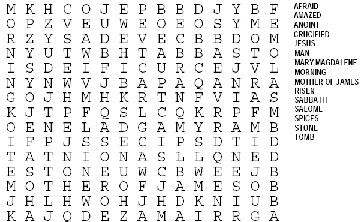

Read the lessons at the Vanderbilt Library website: http://divinity.lib.vanderbilt.edu/lectionary/BEaster/bEasterSun.htm
Read
the lessons at the Vanderbilt Library website:
http://divinity.lib.vanderbilt.edu/lectionary/BEaster/bEasterSun.htm
Elementary School Pew-work
Listen hard to the Gospel. Afterward, fill in the blanks in this story:
1After
the S____________, Mary Magdalene, Salome, and Mary the mother of
James bought some spices to put on J________' body. 2Very
early on Sunday morning, just as the sun was coming up, they went to
the t______. 3On their way, they were asking one another,
"Who will roll the s_______ away from the entrance for us?"
4But when they looked, they saw that the stone had already
been rolled away. And it was a huge stone!
5The
w________ went into the tomb, and on the right side they saw a young
man in a w________ robe sitting there. They were alarmed.
6The
man said, "Don't be alarmed! You are looking for Jesus from
N______________, who was nailed to a c________. God has raised him to
life, and he isn't here. You can see the place where they put his
body. 7Now go and tell his disciples, and especially
P________, that he will go ahead of you to G____________. You will
see him there, just as he told you."
